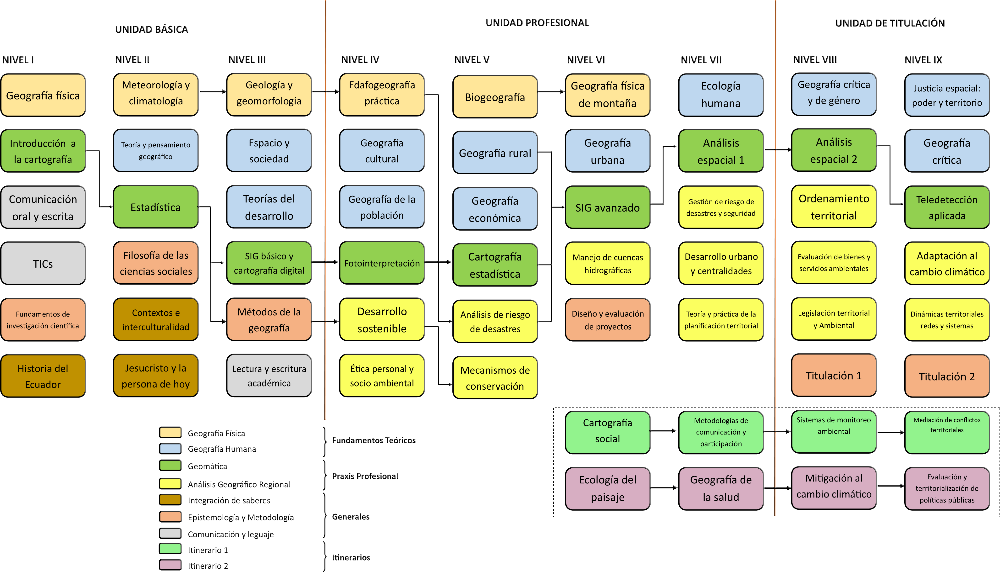

Malla de estudios
Geografía Física
Se enfoca en el estudio y los procesos de las formas de la superficie terrestre de la Tierra y su aspectos ambientales, enfatiza las variaciones espaciales que ocurren y los cambios temporales necesarios para comprender los ambientes contemporáneos de la Tierra.
Geografía Humana
El enfoque de estudio es el ser humano, sus patrones y flujos territoriales, ligados a la demografía, desarrollo económico y social, geopolítica y diferenciación cultural. En general se enmarcar en las localidades hacia la visión sistémica de las redes territoriales urbano/rurales.
Geomática y GIS
Grupo de métodos y herramientas para la adquisición, procesamiento y distribución de datos espaciales, que incluye temas como topografía y geodesia, sensores remotos, fotogrametría y sistemas de información geográfico.
Análisis geográfico regional
estudio sintético de complejos geográficos integrando regiones, territorios y paisajes. Incluye técnicas para la síntesis sistemático del medio natural, la población, las actividades de la sociedad, la organizaciòn espacial y sus relaciones.
Opciones de especialización.
Sostenibilidad, Ambiente y Planificación
Esta fase de estudios se enfoca en la relación de la geografía y el manejo del paisaje, con énfasis en los problemas y retos ambientales a los que la humanidad se enfrenta, que se compone por:
VI nivel: Ecología del paisaje.
VII nivel: Geografía de la salud.
VIII nivel: Mitigación al cambio climático.
IX nivel: Evaluación y territorialización de políticas públicas.
Territorio y Desarrollo Comunitario
Esta fase se enfoca en la relación entre la geografía y las dinámicas sociales, con énfasis en los procesos de planificación territorial y se plantean metodologías afines para su implementación. Se abordan contenidos que apuntan a entender el rol de los actores sociales en la estructuración del espacio y el territorio, se conocimiento se desarrolla en:
VI nivel: Cartografía Social.
VII nivel: Metodologías de comunicación y participación social.
VIII nivel: Sistemas de monitoreo territorial.
IX nivel: Mediación de conflictos territoriales.